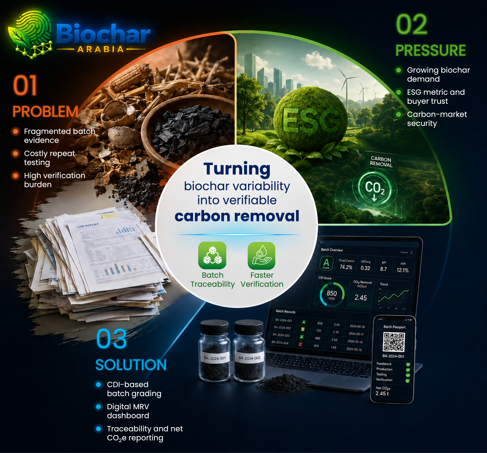

01
CDI Intelligence
Selected chemistry proxies become a transparent batch-level screening score, QA/QC view and next action.
Explore CDI →
We are building the chemistry-to-MRV bridge that makes biochar evidence easier to trace, assess and prepare for verification.
Sampling, laboratory chemistry, QA/QC and verification documentation often live in separate workflows.

Concept visual · illustrative onlySampling notes, laboratory results, QA/QC checks and process context can be difficult to review when they live in separate places. Biochar Arabia is developing a workflow to connect those inputs into a traceable batch record.
This concept artwork includes example scores and verification-related labels. These are placeholders—not measured results, issued credits, certification, registry approval or a claim of permanence.
Measure what is needed. Escalate when uncertainty demands it.
Start simple, add stronger evidence only when the batch needs it.
Selected chemistry proxies become a transparent batch-level screening score, QA/QC view and next action.
Spray–Shine–Snap captures standardized field images and batch metadata for early screening.
Raman descriptors provide selective structural evidence for borderline, unusual or changed-process batches.
CDI organizes selected chemistry proxies into a transparent screening layer while QA/QC remains visible and separate from the score.
Enter measured batch values, review quality checks separately, then see the next evidence action. Your data stays in this browser.
Enter values from your measured batch record. Do not estimate missing values.
Add repeat observations to assess within-batch variability. Each replicate includes its operator and date.
At least two valid observations are needed for a per-proxy CV.
Only assess a metric when its data and comparison design are sufficient.
QA/QC never adds to, subtracts from, or changes the CDI score. ICC needs an appropriate multi-batch/reliability study design and will not be inferred from repeats on one batch.
A screening aid for the next step—not a certification, registry decision or permanence determination.
Enter measured values to see what drives the result.
No final score is shown until required evidence is available.
Enter measurements to see proxy scores and the weighted calculation.
| Proxy | Measured | Score | Weight |
|---|
Provisional literature-threshold CDI — in validation.
CDI = 0.20 × SFC + 0.20 × SVM + 0.20 × SHC + 0.15 × SOC + 0.25 × SRaman. The stated weights are fixed and are not renormalized. QA/QC is reported separately and never changes CDI.
Generate a timestamped local record with batch metadata, all supplied measurements, evidence status, QA/QC, decision and rationale.
Development/validation screening tool. It does not certify carbon removal, issue credits, approve registry eligibility or determine permanence.
Enter a measured primary ID/IG and any replicate ID/IG readings. D/G positions and widths are optional contextual descriptors; they do not directly prove permanence.
Repeatability is assessed only when multiple valid ratios are present.
Raman trigger will be explained here after the current batch screening is assessed.
The Evidence PDF button opens the browser print dialog; choose “Save as PDF.” This is an in-development evidence summary, not certification, registry approval or proof of permanence.
This module uses the Batch ID from Batch Input. Capture a normal-light image and a 365 nm UV image of the same prepared sample. Keep camera distance, lighting and sample presentation as consistent as practical.
Add both images and required sample metadata to assess this field screen.
Complete the field screen; use chemistry and selective Raman review when indicated by the wider evidence.
Field image screening only. Image features and simple capture-review cutoffs are uncalibrated during development. They do not directly measure or determine Fixed Carbon, H/C, O/C, CDI, permanence, or carbon removal. “Normal” means no configured image-capture flags were detected; it is not a batch acceptance or quality claim.
Image measurements are simple descriptive features for calibration; lighting, exposure, camera processing, reagent and preparation can affect them.
Records generated on this device are listed here and stored locally in this browser.
| Batch ID | Date | Status | CDI / Screen | QA/QC | Next Action |
|---|---|---|---|---|---|
| No batch records yet. Generate a Batch Record to add one. | |||||
Standardized field images and batch metadata create an early record and help flag unusual samples for further assessment.
We organize the evidence, show uncertainty, and guide the next step without claiming to certify carbon credits or replace independent verification.
The platform is being developed to bring batch identity, process context, selected chemistry, QA/QC findings, uncertainty, optional Raman descriptors and decision rationale into a structured record for review.
The image is a product concept, not a deployed dashboard. Any scores, removal quantities, permanence durations, “verified” or “issued” labels shown are illustrative placeholders and do not represent validation results, approvals or issued credits. Permanence is not directly measured by field screening.
We are looking to connect with biochar producers, project developers, laboratories, MRV partners and investors interested in shaping the next stage.
Or email biochar.arabia@gmail.com.
Developed through the Mission Innovation SMART-CDR Competition 2026.
Advancing practical MRV for biochar carbon removal.